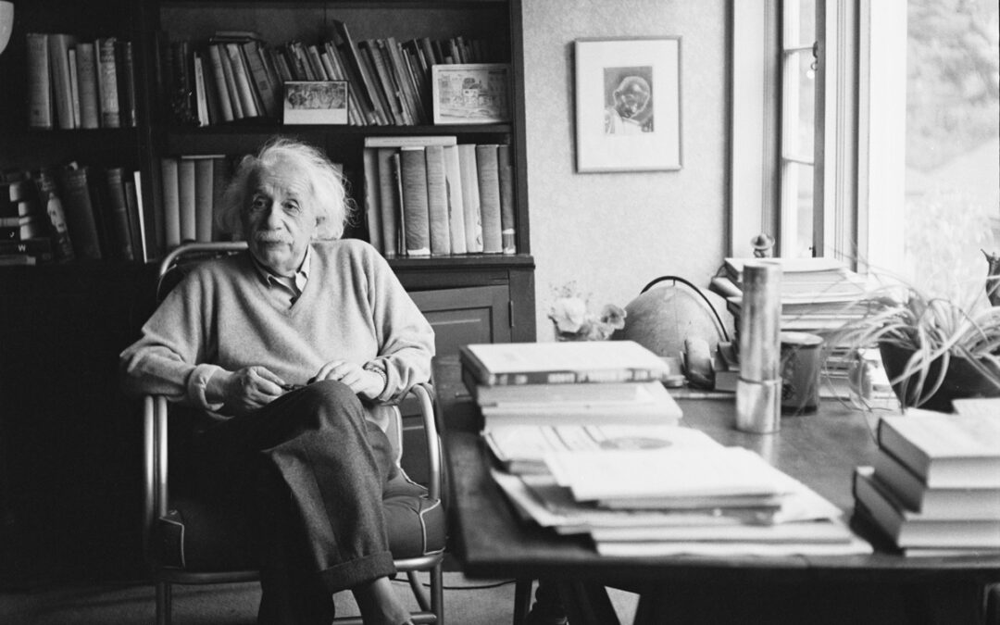

Reflection: Solitude in nature reveals the quiet symmetry between our surroundings and the laws that govern them. Einstein found that stepping away from equations and walking through the woods often brought the clearest answers—connecting physics with philosophy.
